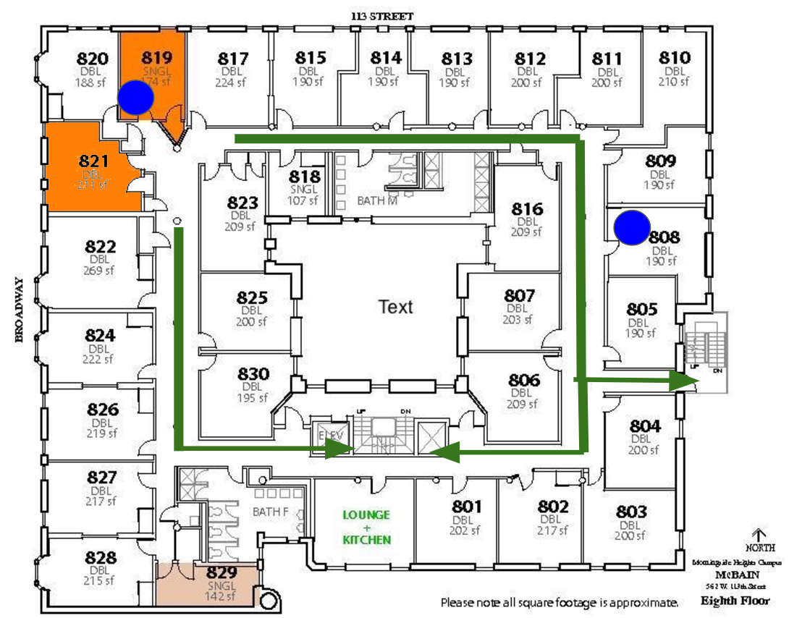

{% extends "base.html" %}
{% block title %} Reading List {% endblock %}
{% block body %}
we have a single html page which autorefreshes every second
upon autorefreshing, it reads in a textfile with instructions on which picture to render.
Fire location and emergency details
status: EMERGENCY
fire detected in room 819, follow evacuation route
{% for i in range(0,20) %}
{% if i%4==0: %}

{% endif %}
{% if i%4==2: %}
{% endif %}
{% endfor %}
 {% endif %}
{% endfor %}
{% endif %}
{% endfor %}